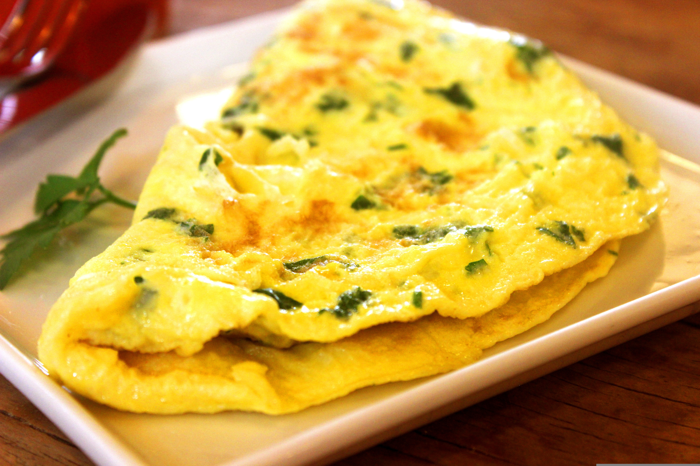

An omelet is a warm, tender egg dish made by whisking eggs and cooking them gently in a pan until they form a soft, foldable layer that can cradle a variety of fillings. As it cooks, the eggs become silky and lightly golden, creating a delicate base for ingredients like melted cheese, sautéed vegetables, fresh herbs, or savory meats. The finished omelet is typically folded into a neat half‑moon shape, offering a comforting balance of fluffy texture and rich flavor that makes it a versatile favorite for breakfast or any time you want something quick and satisfying.